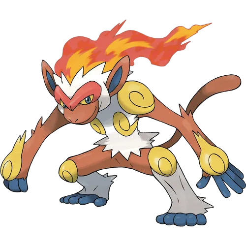

한국판 이름인 초염몽의 유래는 뛰어날 초(超) + 불꽃 염(炎) + Monkey의 몽.
멋진 작명으로 많은 호평을 받았다. 일본판 이름은 업화(業火) + 원숭이(猿). 영문판 이름은 인페르노 + ape(유인원).
격투 타입으로서의 모티브는 절권도 혹은 무아이보란 쪽으로 추정된다.
머리 위로 불꽃이 일렁이는 형상이 드래곤볼의 손오공의 초사이어인 형태와도 유사하다.
신장은 베이리프와 같은 1.2m로, 스타팅 포켓몬의 최종 진화형 중 가장 작다.
다만 이것은 평소에 무릎을 접은 상태로 움직이는지라 그 정도인 거지, 무릎을 쭉 펴면 제법 커진다.